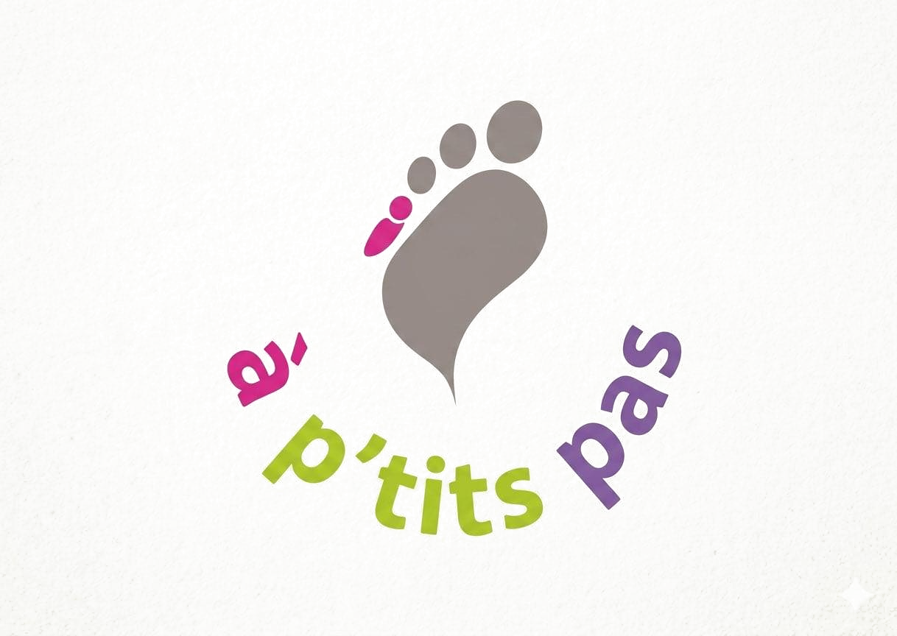

Faire un don
Soutenir à p'tits pas.
Votre don contribue à transformer des besoins du terrain en actions concrètes pour les nouveau-nés hospitalisés, leurs familles et les professionnels qui les accompagnent.
Faire un don sur HelloAsso →
À quoi sert votre soutien ?
Des projets au plus près des besoins.
Don sécurisé
Choisissez votre montant sur HelloAsso
Le paiement et les éventuelles informations liées au don sont gérés directement par HelloAsso. Aucun paiement bancaire n'est collecté sur ce site.
Accéder à HelloAsso🔒 Redirection vers la page officielle de l'association.
Transparence
Votre don, des actions concrètes.
Les projets soutenus sont liés aux besoins des services de néonatologie : soins de développement, confort et lien parent-bébé, espaces pour les familles et formation des professionnels.
Les modalités fiscales et l'éventuelle délivrance de reçus fiscaux seront précisées après validation officielle par l'association.